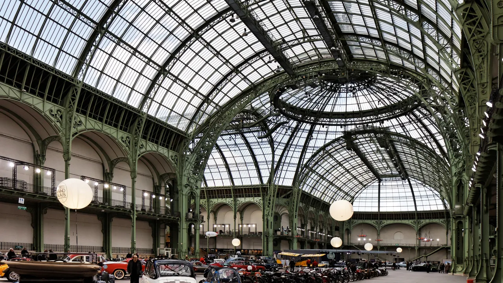
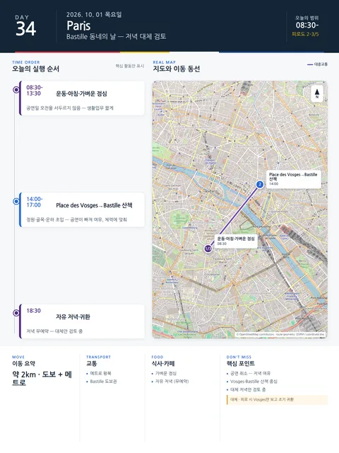

Day 34 · 10/1 목 · Paris

- 핵심 실행
- Il Barbiere 오페라·Bastille
- 권장 출발
- 공연 기준 역산
- 완충
- 17:30 이른 저녁·과식 제한
시간표
| 시간 | 일정 | 실행 포인트 |
|---|---|---|
| 08:30–09:30 | 가벼운 운동 | Jason 러닝/gym, Julia 산책/선택 수영 |
| 09:30–11:00 | 샤워·느긋한 아침 | 공연일 오전을 서두르지 않음 |
| 11:00–12:30 | 휴식·작은 장보기 | 낮 관광을 위해 생활업무를 짧게 |
| 12:30–13:30 | 가벼운 점심 | 저녁 식사까지 안정적으로 이어지게 |
| 14:00–16:30 | Place des Vosges→Bastille 동네 산책 | 정원·골목·운하 초입 중 체력에 맞춰 축소 |
| 17:00 | 산책 종료·공연 준비 | 쇼핑·추가 내부관람 금지 |
| 17:30 | 이른 저녁 | Opéra Bastille 도보권, 과식·음주 제한 |
| 18:30–18:45 | Opéra Bastille 도착 | 보안·화장실·좌석 확인 여유 |
| 19:30 | Il Barbiere di Siviglia | 이탈리아어, 프랑스어·영어 자막, 1회 인터미션 |
| 약 22:45 | 공연 종료 | 다른 야간산책 없이 숙소로 바로 귀환 |
피로도
4/5
이 날의 장소
일자별 시간표와 본문 표기에서 찾은 것이다. 하루의 전부가 아니라 장소 카드가 있는 것만 담는다.
이 날의 메모
Rossini 오페라 — Bastille 동네와 한 호흡으로 묶는 날 고정 공연
상영시간: 3시간 15분. 현재 예매 가능 범위:** €77–205(10/1 활성 카테고리, 8/5 확인). 10/1이 매진되면 10/7 19:30만 백업으로 쓰고, 9/26·10/4·10/10은 각각 도착 직후·Arc 충돌·출국 때문에 기본안에서 제외한다.
상세 실행 확인
- 최고 리스크
- 공연일 과밀
- 우선 삭제
- 추가 내부관람
- 대체안
- 매진 시 10/7 백업
- 식사·휴식
- Bastille 도보권
- 잠금 필요
- Paris Opera P0
Google 실행지도
Vosges·Bastille 산책과 Il Barbiere di Siviglia
지도 펼치기
지도는 펼칠 때만 불러옵니다.
Daily Action Map

실제 좌표와 OpenStreetMap을 사용한 실행용 요약입니다. 도로·대중교통 상황은 출발 직전에 다시 확인하세요.